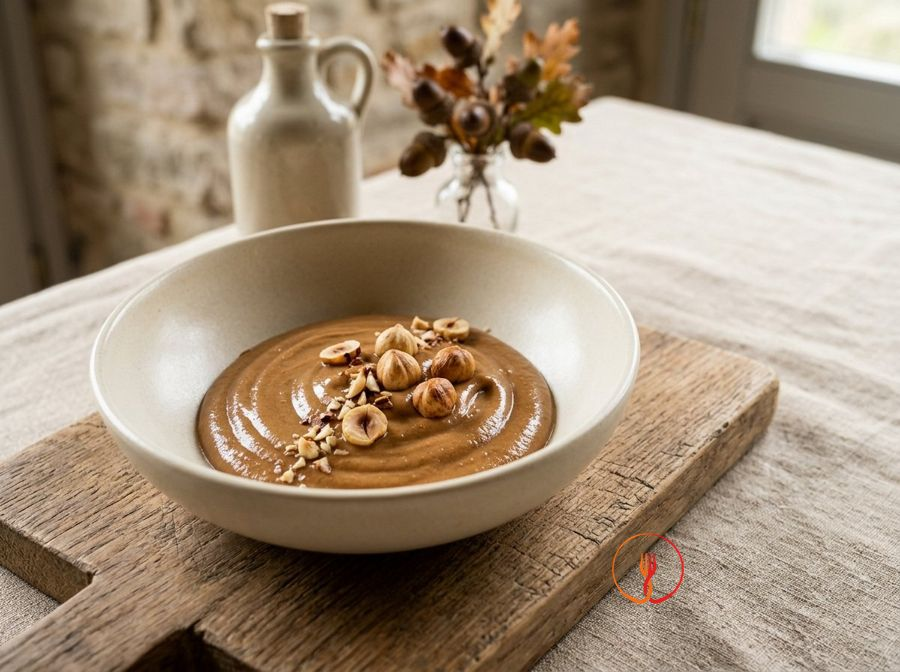

Pasta di nocciole
Ingredienti
- nocciole sgusciate e spellate300 gr
Allergeni
Frutta a guscio
Può contenere tracce di: Arachidi, Latte, Sesamo, Soia.
Procedimento
- Distribuisci le nocciole su una teglia rivestita di carta forno, evitando di sovrapporle.
- Tostale in forno statico preriscaldato a 160 °C per circa 10–12 minuti, controllando che non scuriscano eccessivamente.
- Sfornale e lasciale intiepidire leggermente.
- Trasferiscile in un mixer potente e inizia a frullare a impulsi brevi.
- Durante la lavorazione le nocciole passeranno da una consistenza granulosa a una pasta compatta, fino a rilasciare il loro olio naturale.
- Ferma periodicamente il mixer per raschiare le pareti del contenitore ed evitare il surriscaldamento.
- Continua fino a ottenere una crema liscia e fluida, secondo la potenza dell'apparecchio.
- Trasferisci in un vasetto pulito e conserva in frigorifero.
Consigli dello chef
Consigli, errori e alternative:
- Non aggiungere acqua: comprometterebbe la conservabilità.
- Non frullare continuamente senza pause: il mixer potrebbe surriscaldarsi.
- Puoi preparare la stessa pasta utilizzando mandorle, pistacchi o arachidi.
- Questa ricetta produce pasta pura, non una crema spalmabile zuccherata.
- Conserva in frigorifero e utilizza utensili puliti e asciutti.
Valori nutrizionali (stima)
| Per porzione (150 g) | Per 100 g | |
|---|---|---|
| Energia | 4054 kJ / 969 kcal | 2703 kJ / 646 kcal |
| Proteine | 22 g | 15 g |
| Carboidrati | 25 g | 17 g |
| di cui zuccheri | 6.5 g | 4.3 g |
| Grassi | 91 g | 61 g |
| di cui saturi | 6.8 g | 4.5 g |
| Fibre | 15 g | 9.7 g |
| Sale | 0.0 g | 0.0 g |
Valori stimati con l'AI su dati medi CREA / USDA: sono indicativi e non sostituiscono il parere di un medico o di un nutrizionista.
Apri la ricetta nell'app per la lista della spesa, le schede ingredienti e i negozi vicini.